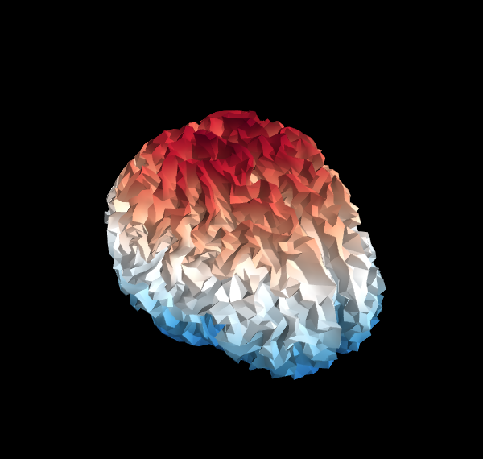

Reading an inverse operator¶
The inverse operator’s source space is shown in 3D.
Script output:
Reading inverse operator decomposition from /data1/agramfort/work/src/mne-python/examples/MNE-sample-data/MEG/sample/sample_audvis-meg-oct-6-meg-inv.fif...
Reading inverse operator info...
[done]
Reading inverse operator decomposition...
[done]
305 x 305 full covariance (kind = 1) found.
Read a total of 4 projection items:
PCA-v1 (1 x 102) active
PCA-v2 (1 x 102) active
PCA-v3 (1 x 102) active
Average EEG reference (1 x 60) active
Noise covariance matrix read.
22494 x 22494 diagonal covariance (kind = 2) found.
Source covariance matrix read.
22494 x 22494 diagonal covariance (kind = 6) found.
Orientation priors read.
22494 x 22494 diagonal covariance (kind = 5) found.
Depth priors read.
Did not find the desired covariance matrix (kind = 3)
Reading a source space...
...
Python source code: plot_read_inverse.py
# Author: Alexandre Gramfort <alexandre.gramfort@telecom-paristech.fr>
#
# License: BSD (3-clause)
from mne.datasets import sample
from mne.minimum_norm import read_inverse_operator
print(__doc__)
data_path = sample.data_path()
fname = data_path
fname += '/MEG/sample/sample_audvis-meg-oct-6-meg-inv.fif'
inv = read_inverse_operator(fname)
print("Method: %s" % inv['methods'])
print("fMRI prior: %s" % inv['fmri_prior'])
print("Number of sources: %s" % inv['nsource'])
print("Number of channels: %s" % inv['nchan'])
###############################################################################
# Show result on 3D source space
lh_points = inv['src'][0]['rr']
lh_faces = inv['src'][0]['use_tris']
rh_points = inv['src'][1]['rr']
rh_faces = inv['src'][1]['use_tris']
from mayavi import mlab # noqa
mlab.figure(size=(600, 600), bgcolor=(0, 0, 0))
mesh = mlab.triangular_mesh(lh_points[:, 0], lh_points[:, 1], lh_points[:, 2],
lh_faces, colormap='RdBu')
mesh.module_manager.scalar_lut_manager.reverse_lut = True
mesh = mlab.triangular_mesh(rh_points[:, 0], rh_points[:, 1], rh_points[:, 2],
rh_faces, colormap='RdBu')
mesh.module_manager.scalar_lut_manager.reverse_lut = True
Total running time of the example: 0 seconds